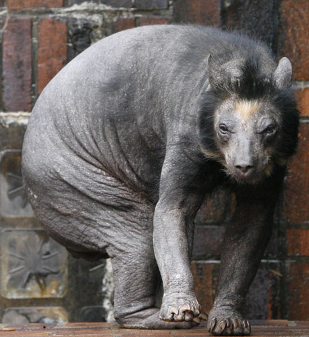

|  |
Je m'appelle Choupi, je suis un choupacabra ou plus literralement un suceur de chèvre. Le nom de mon espèce provient de mon mode d'alimentation, en effet pour me nourrir je mords le coup de mes proies, en particulier des chèvres jusqu'à plus faim. Je ne m'alimente que d'animaux vivants, mais ne vous inquiétez pas, ils ne souffrent que très peu, et pas longtemps! J'aime également les vaches, les chien, les chats, les renards, les poulets... Les gens n'osent pas m'adopter, car mon alimentation est compliqué, pourtant, je suis un très bon animal de compagnie, joueur, câlin, et affectueux! Je cherche une personne patiente, ayant les moyens de s'occuper de moi convenablement et qui me donnera l'affection que je mérite, et rendrait. |